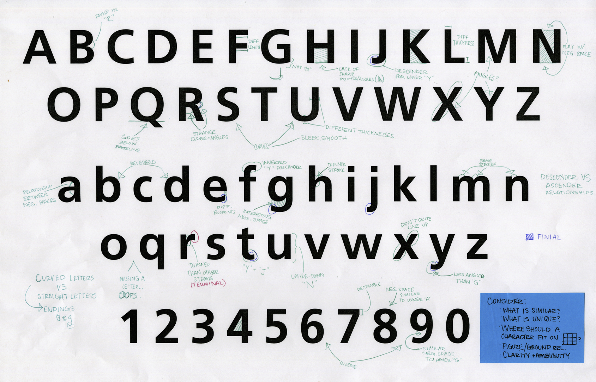
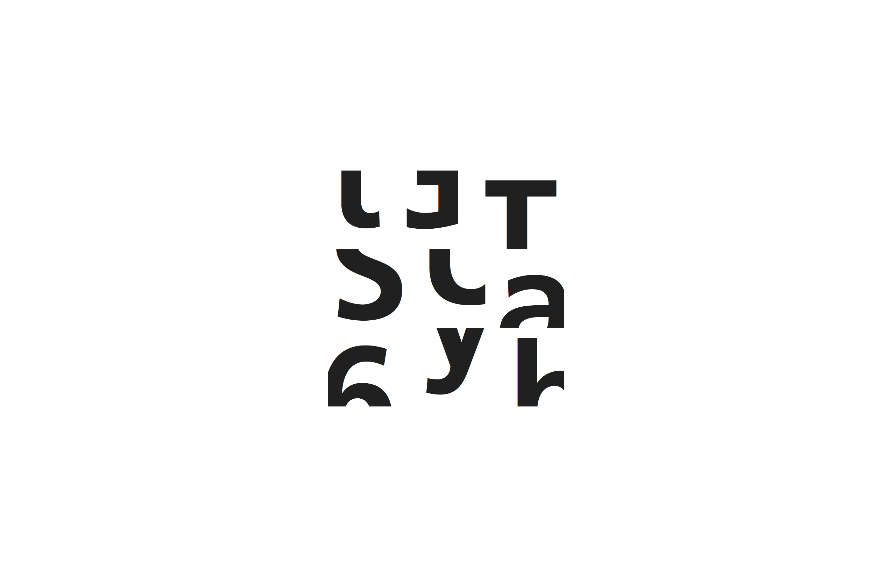

For this project, I was tasked with studying, exploring, using, fondling, and getting to know the typeface Frutiger (65 Bold). I created a 3x3 grid that conveyed the essence of Frutiger through its most characteristic qualities, including the powerful verticals and smooth curves.
To get to know the typeface, I printed a copy of the alphabet and looked for similarities, differences, and everything in between with each letter.



Following the creation grid and exploration of the typeface's structure, I created a video detailing Frutiger's history, usage, and font family.